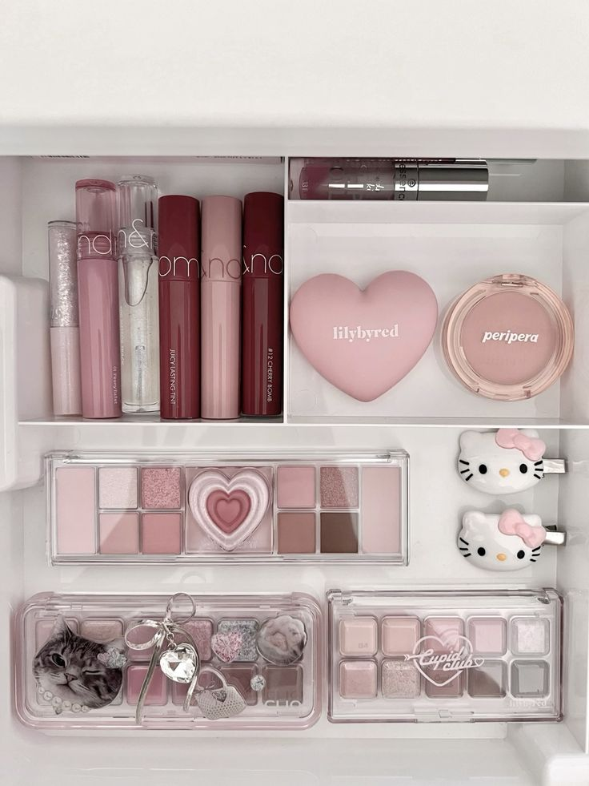

На рынке существует большое количество корейских косметических продуктов. Некоторые из них предназначены для увлажнения кожи, другие — для макияжа или восстановления кожи. Ниже представлена таблица популярных продуктов.
Сравнение продуктов
| Название | Тип | Бренд | Эффект |
|---|---|---|---|
| Juicy Tint | Тинт | Rom&nd | Увлажнение |
| Cushion | Тон | Unleasha | Легкое покрытие |
| Эссенция/Сыворотка | Уход | Anua | Восстановление |


Все эти продукты стали популярными благодаря высокому качеству и современному дизайну. Многие бренды также уделяют внимание упаковке и удобству использования косметики.